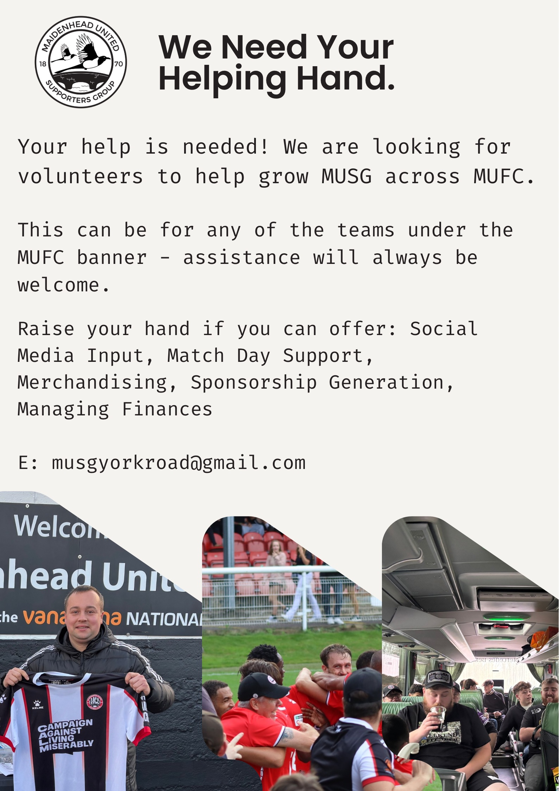

Maidenhead United Supporters Group (MUSG) is a dynamic and enthusiastic community of devoted fans who unite to champion and elevate the accomplishments of Maidenhead United Football Club. As the official supporters association, MUSG serves as a collective voice, fostering unity among loyal fans while offering a plethora of perks and activities exclusively for its members.
We look to engage, welcome and support the club’s supporter base through all teams and groups, including Men’s Seniors, Women's Seniors, Juniors, Futsal, and Community Trust. Furthermore, MUSG welcomes potential partners who share our vision for community engagement, growth, and the love of football. Together, we can propel Maidenhead United Football Club to new heights while positively impacting the lives of our supporters and the wider community.
We organise player sponsorship, away fixture travel, fundraising events, and supporter initiatives to bring fans together and support the club.
